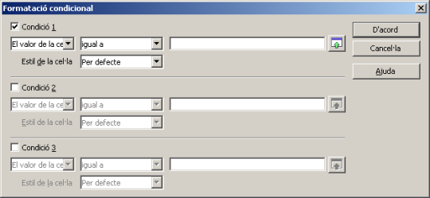
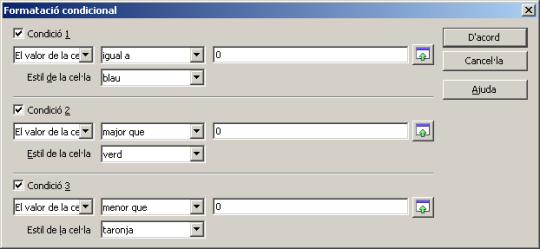
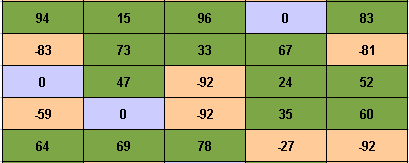

Formatació condicional
L'opció de menú Format | Formatació condicional… obre un diàleg

que permet establir un màxim de tres condicions per cel·la, que s'han de complir perquè les cel·les seleccionades tinguin un format determinat.
La formatació condicional permet, per exemple, destacar amb un determinat format de cel·la, que prèviament s'ha d'haver creat, aquelles que el seu valor estigui per sobre de la mitjana dels valors introduïts. Així, si els valors del full canvien, també canviarà el format de les cel·les amb formatació condicional, sense necessitat d'adjudicar-les un format manualment.
Aplicar formatació condicional
Per aplicar la formatació condicional cal seguir els següents passos:
- Creeu els formats de cel·les que voldreu fer servir en la formatació condicional. Recordeu que El LibreOffice Calc només disposa de 5 estils (formats) de cel·la: Encapçalament, Encapçalament1, Per defecte, Resultat i Resultat2
- Seleccioneu les cel·les que han de tenir el format condicional
- Demaneu l'opció de menú Format | Formatació condicional…
- Establiu en el diàleg la o les condicions (un màxim de 3)
- Prémer el botó D'acord
En el següent exemple que mostra el diàleg, s'han creat tres estils, verd, blau i taronja, i es vol aconseguir que una cel·la presenti l'estil blau si el seu valor és igual a zero, verd si el valor és major que zero i, finalment, taronja si és menor que zero

Observeu el resultat obtingut sobre una taula de valors entre -100 i 100
